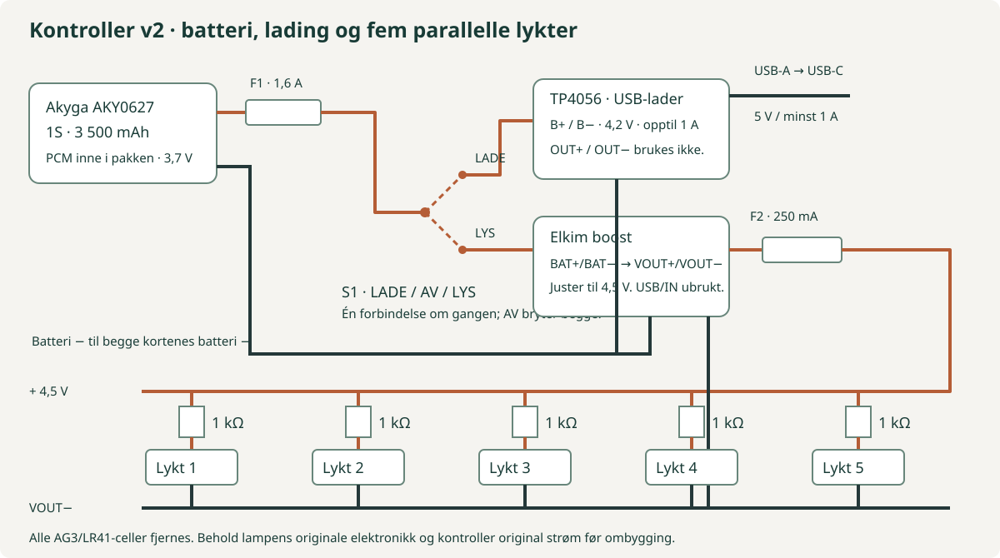

Deler til første bygg1 281,60 krHele innkjøpspakker, ett batteri, ett kort av hver type, én filamentrull. Verktøy og frakt kommer i tillegg.
Ekstra verkstedlager974,00 krReservebatteri, flere kort, kabler, brytere, skruer og filament. Inkludert i kjøpslisten under.
Gjenbrukbare verktøy2 505,80 krÉn av hver. Separat avbiter er valgfri fordi loddesettet har tang.
Hele kjøpslisten + fraktanslag5 261,40 krVarer 4 761,40 kr + fraktanslag 500,00 kr.
Med verktøy fra før: 2 755,60 kr for hele reservedelslisten. Første bygg alene med egne verktøy: 1 781,60 kr inkl. samme fraktanslag.
Batteri, lader, omformer, bryter og begge vern er nå konkrete prisede varer. Ingen batterireserve legges oppå. Fraktanslaget på 500 kr er ikke en pris fra butikkassen og kan bli høyere med mange småordre. Eksisterende lykter og printer er utelatt. Prisene er inkl. mva.; kampanjerabatter er ikke forutsatt.
Kjøpslisten inkluderer reservedeler, slik du ønsket. «Første bygg» er en kostnadssammenligning med færre enheter, ikke en andre avkryssingsliste. CSV viser begge mengder. De dyre lampepluggene (990 kr) er valgfrie: basisbygget loddes direkte. Vegglader, ekstra tinn, skyvelære, loddematte og egen avbiter er også tilvalg.
Gjenstår å kjøpe · inkl. fraktanslag5 261,40 krKryss av hele kjøpsantallet når det er på plass.
Frakt står separat. Søk/filter endrer ikke totalsummen; avkryssing gjør det.
LOKAL HANDLEPLAN · KONTROLLERT 20. OKTOBER 2026
Storo, sentrum eller nett?
Handle listen som en konkret tur: Storo for det som faktisk er på lager der, Torggata 6 for ledning, multimeter og varmluftpistol, og nettbestilling for resten. Kjøp bare verktøy du mangler. Knappene går til samme avkryssingsliste som budsjettet bruker.
Sju listede varer har lokal lagerstatus; to av dem er valgfrie. Hverdager 10–21. Lagerstatus er kontrollert, ingen varer er reservert. Flere poster har bare 1 eller 1+ igjen.
To butikker på samme adresse i sentrum: fire ruller svart koblingstråd og ett multimeter hos Kjell, varmluftpistol hos Clas. De eksakte varene er ikke på lager på Storo. Hverdager 09–20. Dette er en egen sentrumstur, ikke en butikk på Storo. Multimeteret har bare ett eksemplar oppgitt.
Valgt batteripakke, lader og boostkort, modusbryter, to sikringsholdere, begge sikringspakker, fem USB-kabler, 100 skruer, to filamentruller og verktøy du mangler. Avtakbare lampeplugger er valgfrie; de koster 990 kr og kan forsinke en samlet MrSmart-ordre.
Lagerstatus er et øyeblikksbilde fra butikkvelgerne, ikke fra kjedenes nettlager. Ingen reservasjon eller ordre er lagt inn. Sjekk/velg hentebutikken på produktlenken før avreise, særlig der bare ett eksemplar er oppgitt. Fraktanslag står separat i budsjettet. Ingen kampanjerabatt er forutsatt.
LEVERING OG RESERVEDELER · 20. OKTOBER 2026
Når kan delene være her?
Planlegg foreløpig med hele basisbestillingen rundt 26.–30. oktober. Dette er et anslag for Oslo fra bestilling 21. oktober, ikke en lovet leveringsdato.
Bestilling og lokal handletur onsdag 21. oktober 2026. Ingen ordre er lagt inn. Leveringsdato i endelig ordrebekreftelse går foran anslagene her.
Alle elektriske komponenter til kontrollboksen er nå valgt. Antall 2 batterier er akseptert i kurven, men MrSmart oppgir ikke tilgjengelig stykkantall. Endelig utsending av begge må bekreftes i ordren. Valgfrie lampeplugger er fortsatt bestillingsvare og bør bestilles separat hvis du vil starte raskt.
Storo og Torggata
21. oktober · kjøp i butikk
Lokalt lager kontrollert 20. oktober. Forutsetter at varene fortsatt er der; ingenting er reservert.
Batteriproduktet viser på lager og utsending innen 24 timer. Kurv med 2 stk. viste 458 kr uten antallsfeil, men bekreftet ikke eksakt beholdning eller transportdato. Ikke samme leveringsløfte som for 1 stk. Ingen bestilling er lagt inn.
Butikken oppgir 1–3 dager · planlegg 22.–26. oktober
Ladekort: 16 på lager. Boostkort: 89 på lager. Begge antallene dekker de tre ønskede eksemplarene. Forutsatt bestilling før kl. 12; transportdato er ikke bekreftet i kassen.
Motorkondensator · brytere, sikringer, holdere, USB og skruer
Planleggingsanslag 23.–28. oktober
Oppgitt beholdning dekker planlagt antall på alle disse produktene. Normalt utsending samme/neste dag for lagervarer; transportdato er ikke innhentet i kassen.
Sendes senest 30. oktober ifølge tidligere kurv; anslag ankomst 2.–6. november
10 par er bestillingsvare. De er ikke med i basisbygget. En samlet MrSmart-ordre kan vente på disse; bestill dem separat dersom batteriene skal sendes raskere.
Kjøpslisten har reserve til feil og senere maskiner. Budsjettet viser også et førstebygg med færre enheter, så du kan skille lampeprosjektet fra verkstedlageret. Verktøy kjøpes én gang.
Del
Kjøp
Hvorfor
Batteripakker
2
1 installert + 1 reserve; aldri parallellkoblet
Ladekort / boostkort
3 av hver
1 av hver installert + 2 reservekort
Modusbrytere / sikringsholdere
5 / 5
1 bryter og 2 holdere installert; resten er reserve
USB-kabler
5
1 installert + 4 til senere maskiner
Svart koblingstråd
4 × 10 m
Første bygg trenger opptil 15 ledermeter; resten er reserve
M3 × 8-skruer / PLA
100 / 2 × 1 kg
26 skruer installert. Hele ruller kjøpes, ikke beregnet printforbruk.
Store sortimenter og sikringer
1 pakke av hver
Pakningene inneholder allerede mange reservedeler
Verktøy
1 av hver
Ingen verktøydubletter
Avtakbare lampeplugger
10 par · valgfritt
5 til lyktene + 5 reserve, dersom tilvalget velges
Dette er lager til feil og senere prosjekter, ikke flere ferdige bokhyllebygg. Avkryssing i handlelisten betyr at hele det oppgitte antallet er på plass.
01 / VALGT LØSNING
Én pakke. To modi. Fem lykter.
Lampene kobles parallelt på ett svart ledningspar. USB brukes til lading av boksen.
01
3 500 mAh inne i boksen
Akyga AKY0627 er en ferdig 1S-pakke med ledninger, kontakt og PCM som beskytter mot overlading, dyp utlading og kortslutning. Ingen usikker 18650-holder og ingen lodding rett på en celle. Reservebatteriet oppbevares separat.
02
Lade / Av / Lys
En mekanisk på–av–på-bryter kobler batteriets positive pol til enten TP4056-laderen eller boostkortet. I midten er begge frakoblet. Lampene er av under lading; dette krever ingen automatisk lastdeling eller programvare.
03
Én inn, én ut
En ferdig USB-A–USB-C-kabel går inn på venstre ende. På høyre ende går ett tynt svart ledningspar til fem T-bokser bak bøkene. Hver lykt får en kort gren med egen motstand. Dyre avtakbare kontakter er et tilvalg.

V2-koblingen. USB skal bare kobles til TP4056-kortet.Terminal for terminal: slik kobles boksen
Fra
Til
Merknad
Batteri + på medfølgende motkontakt
F1 (1,6 A) → S1 felles
F1 nær batterikontakten. Mål polaritet før batteriet plugges inn.
S1 LADE
TP4056 B+
USB-A 5 V / minst 1 A → ferdig USB-C-kabel → TP4056.
S1 LYS
Boost BAT+
Boostkortets egen USB-C og IN+/IN− forblir uten tilkobling.
Batteri −
TP4056 B− + boost BAT−
Felles retur etter batteripakkens egen PCM.
Boost VOUT+
F2 (250 mA) → hovedledning +
Still regulatoren til 4,5 V først.
Boost VOUT−
Hovedledning −
Bruk merking og kontinuitetsmåling; ikke anta at pads er forbundet inne i kortet.
Hovedledning +
1 kΩ → lykt +, gjentas fem ganger
Én motstand per lykt. Lykt − tilbake til hovedledning −. Alle småceller fjernes.
Ubrukte kontakter: TP4056 OUT+/OUT− er åpne. Ladekortets ekstra utgangsvern er derfor ikke brukt som batterivern; Akyga-pakkens egen PCM følger batteriet i begge modi. Ikke koble USB til boostkortet. Ikke parallellkoble reservebatteriet.
Bryteren: butikken kaller treterminalbryteren SP3T. Kontroller med ohmmeter at midtstillingen bryter alt, og at ytterstillingene forbinder felles terminal med hver sin andre terminal. Merk deretter LADE / AV / LYS på lokket. Ikke gjett terminalene ut fra hendelens retning.
Hvor ofte må den lades?
Pakken har nominelt 12,95 Wh. Med en illustrativ 80 % omformervirkningsgrad blir omtrent 10,36 Wh igjen til lampene, før kortenes tomgangsforbruk. Ved fem lykter à 1 mA blir det ca. 460 timer; ved fem à 3 mA ca. 153 timer. Dette er regneeksempler, ikke målt driftstid. Boostkortets tomgangsstrøm kan forkorte tiden vesentlig ved så liten last. Mål batteristrømmen under drift: timer ≈ 3 500 mAh / målt mA.
Lading er opptil 1 A, så 3,5 timer er bare en ideell nedre grense. Planlegg rundt 5–7 timer med avsluttende spenningsfase og mulig termisk reduksjon; mål første fulle ladesyklus. Sett AV ved lagring. Ingen minimumslast er lagt inn som sløser bort strøm.
02 / ALT SOM SKAL HANDLES
Handle lokalt. Bestill resten.
Varene er sortert etter Storo, Torggata og nettbestilling. Alle kjøpslenker er norske.
Første bygg er dimensjonert for 5 lykter; kjøpsantallene inkluderer nå reserve til feil og senere maskiner. Ledningsnettet er fortsatt maks. 5 m hovedledning og 0,5 m avgrening per lykt. Kryss av når hele kjøpsantallet er kjøpt eller finnes fra før — da trekkes de fra beløpet som gjenstår å kjøpe. Totalen er uavhengig av søk og filter. Valgene lagres bare i denne nettleseren.
Pakken har 25 svarte 2,5 × 100 mm-strips. Åtte til PCB-kantene, fire til to sikringsholdere, to ved kabelutgangene og ti i fem T-bokser: 24 svarte totalt.
Skjøt to strips sammen per kortkant og per sikringsholder, så 100 mm-lengdene rekker. Fest over ledige kortkanter, aldri komponenter eller batteriposen. Verneplaten holder batteriet uten å klemme det.
Lager og reserve: 25 små svarte dekker 24 planlagte festepunkter. De andre 275 stripsene kan brukes til reserve og videre maskiner, selv om de har andre farger/størrelser.
Små merker inne i boksene skiller + fra − når begge ledninger er svarte. Egne etiketter kan brukes i stedet. Alle elektriske skjøter isoleres med krympeslange; merketeipen er for identifikasjon.
Lager og reserve: Én rull har 20 meter teip, langt mer enn merkene i første bygg. Behold resten som verkstedlager.
48 W, 230 V og temperaturjustering 160–480 °C. Startpakken har rengjøringssvamp, hjelpende hånd med lupe, pinsett, tang, tinnsuger, loddelisse og 10 g loddetinn.
Bruk holderen til den varme bolten og et varmebestandig underlag. Luft godt ved lodding. Egen tilsvarende stasjon kan brukes.
Lager og reserve: Ett verktøy/sett. Bruk det du allerede har; ingen ekstra eksemplarer til lager.
Til å måle USB-kabel, bryter og prøvens hull. Batteri følger med. Nyttig ved tilpasning, men du kan også prøve de faktiske delene direkte i passformprøven.
Kjell & Company + Clas Ohlson · Torggata 6. Beløpet viser gjenstående varer i denne gruppen; valgfrie tillegg er utelatt til de velges.
To svarte ledere tvinnes lett sammen. Oppgitt ytterdiameter 1,1 mm hver. Fire 10 m-ruller gir 40 ledermeter / 20 m ledningspar; første hylleoppsett bruker opptil ca. 15 ledermeter.
Lager og reserve: 40 ledermeter gir 20 meter ledningspar. Første oppsett bruker opptil ca. 15 ledermeter; resten er margin og lager til senere prosjekter.
Måler DC-spenning, lav DC-strøm og kontinuitet. Måleledninger og to AA-batterier følger med. Brukes til å stille regulatoren, måle lampestrøm og kontrollere polaritet.
Ved strømmåling står meteret i serie med lampen, med riktig inngang og område. Ikke mål strøm ved å legge prober direkte over batteriet.
Lager og reserve: Ett verktøy/sett. Bruk det du allerede har; ingen ekstra eksemplarer til lager.
1 stk.Norsk butikkKjell Torggata
Kjell & Company ↗599,00 kr totalt1 × 599,00 kr · per stk./settKjell Torggata: 1 stk. · Storo: ikke på lagerNettlager: 20+ · levering om 2–6 dagerKontrollert 2026-10-20 · inkl. mva.
230 V, justerbar 50–600 °C. Bruk moderat varme og beveg luftstrømmen når krympeslangen krympes, før skjøtene legges i plastboksene.
Lager og reserve: Ett verktøy/sett. Bruk det du allerede har; ingen ekstra eksemplarer til lager.
Norske nettbutikker · resten av den kjøpsklare listen. Beløpet viser gjenstående varer i denne gruppen; valgfrie tillegg er utelatt til de velges.
Ferdig svart ladekabel, Ø3,5 mm. USB-C plugges i TP4056-laderen inne i boksen; USB-A går ut gjennom kabelsporet på venstre ende. Ingen kabelklipping eller dataledere å isolere.
Bruk USB-A-lader med 5 V og minst 1 A. USB-C til USB-C er ikke valgt fordi ladekortet kan mangle CC-motstander.
Lager og reserve: 1 til boksen + 4 til reserve og senere maskiner.
MrSmart ↗990,00 kr totalt10 × 99,00 kr · per komplett kontaktparValgt for nettbestilling i denne planen; andre fysiske butikker er ikke kartlagt.Antallskontroll i handlekurv: alle 10 par er bestillingsvare. Samlet ordre oppgitt sendt senest 30.10.2026.Kontrollert 2026-10-20 · inkl. mva.
M3 × 8 mm, TX10-hode Ø5,5 × 2,4 mm. Første bygg trenger 26: fire til kontrollokk, fire til batteriverneplate, åtte til fire justerbare PCB-skinner og ti til fem T-bokser.
Butikken oppgir 0,75 kr per skrue ved 100 stk. eller mer, mot ordinært 1 kr. Budsjettet bruker denne publiserte mengdeprisen: 100 × 0,75 kr = 75 kr. Kontroller antall og rabatt i kassen.
Lager og reserve: Kjøp 100 med mengdepris 0,75 kr/stk. Førstebygg-sammenligningen bruker 30 stk. til ordinær 1 kr/stk. Alle fester bruker disse skruene; ingen ekstra avstandsstykker, muttere eller innsatser.
Motorkondensator ↗75,00 kr totalt100 × 0,75 kr · per skrueValgt for nettbestilling i denne planen; andre fysiske butikker er ikke kartlagt.300 på lagerKontrollert 2026-10-20 · inkl. mva.
Svart PLA, to 1 kg-ruller med spole. Kjøp bare det som mangler hvis du allerede har filament. Mengden er verkstedlager og feilprintmargin, ikke beregnet forbruk i én kontrollboks.
CAD-volumet for komplett sett og prøve er ca. 210 cm³: ca. 261 g ved helt massiv PLA og antatt 1,24 g/cm³, før avfall. Dette er et geometrianslag, ikke en slicermåling. Én kilo er romslig for første prototype; andre rull er verkstedlager.
Lager og reserve: Én 1 kg-rull dekker første prototype og feilmargin; andre rull er reserve til videre maskiner. Ikke to kilo forbrukt i én lampeinstallasjon.
2 ruller à 1 kgNorsk butikkNettbestilling · Polyalkemi
Polyalkemi ↗350,00 kr totalt2 × 175,00 kr · per 1 kg med spoleValgt for nettbestilling i denne planen; andre fysiske butikker er ikke kartlagt.20+ på lager · kampanjeprisKontrollert 2026-10-20 · inkl. mva.
Område 0,08–10 mm² dekker 0,14 mm²-ledningen. En eksisterende tang kan brukes dersom den faktisk støtter så tynn flertrådet ledning.
Lager og reserve: Ett verktøy/sett. Bruk det du allerede har; ingen ekstra eksemplarer til lager.
Elektroimportøren ↗599,00 kr totalt1 × 599,00 kr · per stk./settValgt for nettbestilling i denne planen; andre fysiske butikker er ikke kartlagt.260+ på lagerKontrollert 2026-10-20 · inkl. mva.
VALGFRITT
Til å klippe tynn kobberledning, motstandsben og strips. Kan sløyfes hvis du allerede har en egnet liten avbiter eller den medfølgende tangen dekker behovet.
Loddesettet inneholder allerede en tang. Separat avbiter er et tilvalg dersom den ikke dekker behovet.
Lager og reserve: Ett verktøy/sett. Bruk det du allerede har; ingen ekstra eksemplarer til lager.
1 stk. / fra førNorsk butikkNettbestilling · Bygghjemme
Bygghjemme ↗60,00 kr totalt1 × 60,00 kr · per stk./settValgt for nettbestilling i denne planen; andre fysiske butikker er ikke kartlagt.Lagervare · normalt 5–10 hverdagerKontrollert 2026-10-20 · inkl. mva.
Inneholder TT10 til de vanlige TX10-skruehodene samt små flate SL1,5 og SL2 til regulatorjustering. Ett sett dekker begge oppgaver.
Lager og reserve: Ett verktøy/sett. Bruk det du allerede har; ingen ekstra eksemplarer til lager.
1 settNorsk butikkNettbestilling · Jula
Jula ↗149,00 kr totalt1 × 149,00 kr · per stk./settValgt for nettbestilling i denne planen; andre fysiske butikker er ikke kartlagt.Nettlager: 100+ · levering 3–7 virkedagerKontrollert 2026-10-20 · inkl. mva.
VALGFRITT
Fluxfylt, 100 g. Startpakken har allerede 10 g loddetinn, så denne rullen er valgfri. Kjøp ved behov eller dersom egen loddebolt ikke har egnet tinn.
Lager og reserve: Én rull har 100 g loddetinn. Dette er allerede et forbrukslager; startpakken har dessuten 10 g.
Ekstra rull ved behovNorsk butikkNettbestilling · Kjell & Company
Kjell & Company ↗219,90 kr totalt1 × 219,90 kr · per stk./settValgt for nettbestilling i denne planen; andre fysiske butikker er ikke kartlagt. Kjell Storo: ikke på lager.Nettlager: 5+ · levering om 2–6 dagerKontrollert 2026-10-20 · inkl. mva.
VALGFRITT
Varmebestandig arbeidsunderlag med rom til smådeler. Oppgitt til 480 °C. Bruk eksisterende egnet loddeunderlag hvis du har; legg den varme bolten i holderen.
Lager og reserve: Én arbeidsmatte, ingen dublett.
1 stk. hvis du manglerNorsk butikkNettbestilling · Motorkondensator
Motorkondensator ↗129,00 kr totalt1 × 129,00 kr · per stk./settValgt for nettbestilling i denne planen; andre fysiske butikker er ikke kartlagt.4 på lagerKontrollert 2026-10-20 · inkl. mva.
Dette kortet brukes bare som omformer: BAT+/BAT− inn fra batteriet i LYS-modus, VOUT+/VOUT− ut til lampene. 4,3–27 V justering; still til 4,5 V med multimeter før lampetilkobling.
IKKE koble USB-C eller IN-pads på dette kortet. Lading gjøres av separat TP4056-kort. USB-porten på boostkortet vender inn i boksen og er utilgjengelig når lokket er på.
Lager og reserve: 1 i boksen + 2 reservekort.
3 stk.Norsk butikkNettbestilling · Elkim
Elkim ↗117,00 kr totalt3 × 39,00 kr · per stk./settNorsk nettbutikk; ingen lokal butikkstatus for dette produktet.89 på lager · oppgitt levering 1–3 dagerKontrollert 2026-10-20 · inkl. mva.
Tre loddeterminaler, tre stabile stillinger, Ø6 mm montering, kropp 12,5 × 6,5 × 9,5 mm. Felles terminal får batteri+ via F1; de to andre går til lader B+ og boost BAT+.
Butikken kaller den SP3T. Kontroller funksjonen med kontinuitet: midtstilling helt åpen; hver ytterstilling kobler felles terminal til én annen terminal. Kartlegg før lodding. Knappens retning trenger ikke tilsvare terminalen under den.
Lager og reserve: 1 i boksen + 4 til feil og senere maskiner.
Motorkondensator ↗60,00 kr totalt5 × 12,00 kr · per stk./settNorsk nettlager: 126 stk.126 på lagerKontrollert 2026-10-20 · inkl. mva.
F2: 250 mA treg 5 × 20 mm-sikring på positiv 4,5 V-utgang før det tynne ledningsnettet. Fem 1 kΩ-grener kan samlet ikke trekke mer enn 22,5 mA ved kortsluttede lampeender.
Sikringen begrenser konsekvensene av feil i ledningsnettet; hver gren har også sin egen motstand. Ikke øk sikringsverdien for å omgå en feil.
Lager og reserve: 1 installert + 9 reservesikringer.
1 pakke à 10 stk.Norsk butikkNettbestilling · Motorkondensator
Motorkondensator ↗49,00 kr totalt1 × 49,00 kr · per pakke à 10 stk.Norsk nettbutikk; ingen lokal butikkstatus for dette produktet.3 pakker på lagerKontrollert 2026-10-20 · inkl. mva.
To isolerte 5 × 20 mm-holdere brukes: én til batteriets F1 (1,6 A) og én til utgangens F2 (250 mA). 25 cm total ledningslengde, 0,129 mm² ledere, oppgitt for under 4 A.
To universelle rom à 60 × 18 × 18 mm er satt av i boksen. Butikken publiserer ikke kroppsmål; mål holderne før fullprint. Strips holder dem fast, uten spesialklips.
Lager og reserve: 2 i første boks + 3 reserveholdere.
Motorkondensator ↗45,00 kr totalt5 × 9,00 kr · per stk./settNorsk nettbutikk; ingen lokal butikkstatus for dette produktet.13 på lagerKontrollert 2026-10-20 · inkl. mva.
Beskyttet 1S LiPo-pakke, nominelt 3,7 V / 12,95 Wh. 68 × 55 × 6,7 mm, 150 mm ledninger og 2-polet JST-BEC 2,54 mm med motkontakt. Ingen løs 18650-holder eller batterisveising.
PCM beskytter mot overlading, dyp utlading og kortslutning. Ropla oppgir maks 0,5C = 1,75 A for AKY0627; dette er strengere enn butikkens 1C og brukes i designet. 1 A-laderen er under 1,75 A. Koble bare én pakke om gangen; reservepakken skal ikke parallellkobles.
Lager og reserve: 1 installert + 1 reserve til senere maskin eller utskifting.
2 stk.Norsk butikkNettbestilling · MrSmart
MrSmart ↗458,00 kr totalt2 × 229,00 kr · per stk.Norsk nettbutikk; ingen lokal hentestatus kontrollert.Produktsiden: på lager, sendes innen 24 timer. Kurven aksepterte 2 stk. til 458 kr; eget tilgjengelig antall er ikke oppgitt.Kontrollert 2026-10-20 · inkl. mva.
Lader én 3,7 V LiPo-celle til 4,2 V. USB-kabelen plugges i dette kortet. B+ går via LADE-kontakten på bryteren; B− går til batteri−. OUT+/OUT− brukes ikke i denne oppskriften.
Batteripakkens egen PCM beskytter også under LYS. Ladekortets OUT-vern er ikke brukt som batterivern i denne koblingen. Bryteren isolerer lampedriften under lading, så vi er ikke avhengige av udokumentert lastdeling. Kortmål er ikke oppgitt; det er reservert et 34 × 22 × 12 mm rom.
Lager og reserve: 1 installert + 2 reservekort.
3 stk.Norsk butikkNettbestilling · Elkim
Elkim ↗177,00 kr totalt3 × 59,00 kr · per stk.Norsk nettbutikk; ingen lokal hentestatus kontrollert.16 på lager · butikken oppgir 1–3 dagerKontrollert 2026-10-20 · inkl. mva.
F1 monteres i batteriets positive ledning så nær motkontakten som praktisk mulig, før modusbryteren. Bruk en egen holder, og isoler all metallkontakt.
F1 tåler normal lading rundt 1 A og supplerer batteriets PCM. Utgangens 250 mA-sikring skal ikke brukes her.
Lager og reserve: 1 installert + 9 reserve. Én pakke er nok.
Motorkondensator ↗49,00 kr totalt1 × 49,00 kr · per stk.Norsk nettbutikk; ingen lokal hentestatus kontrollert.12 pakker på lagerKontrollert 2026-10-20 · inkl. mva.
Brukes til å følge batteri- og kapslingstemperaturen under første fulle ladesyklus. Sensor på 145 cm ledning; CR2025-batteri følger med. Bruk et egnet eksisterende termometer hvis du har.
Fest sensoren mot batteriets isolerte overflate med merketeip, uten å klemme posen. Ikke legg en metallprobe over bare loddepunkter. Dette er enkel temperaturkontroll, ikke kalibrert termisk kvalifikasjon.
Lager og reserve: Ett gjenbrukbart måleverktøy, ingen dublett.
1 stk. / fra førNorsk butikkNettbestilling · Jula
Jula ↗59,90 kr totalt1 × 59,90 kr · per stk./settValgt for nettbestilling i denne planen; andre fysiske butikker er ikke kartlagt.Nettlager: 100+ · oppgitt 3–7 virkedagerKontrollert 2026-10-20 · inkl. mva.
Ingen treff. Prøv et annet søk eller vis alle butikker.
Kontrollert 20. oktober 2026. Alle kjøpslenker er norske butikker. Pris og lager kan endres. Ingen ordre er lagt inn. Butikklager, nettbeholdning og beregnede leveringstider er merket hver for seg.
03 / PRINTDELER v2
Boks, batterivern og fem avgreninger.
180 × 112 × 34,4 mm kapsling; bryterhendelen kommer ca. 11 mm over lokket. Boks med USB-ledning i venstre ende og ett svart ledningspar i høyre.
Faktisk CAD v2 · forenklede komponentrom
Dra for å rotere · rull for zoom · velg del under.
STL + STEP + KILDE
Plass til hele kontrolleren.
Separate områder til batteri, lader, regulator og sikringer. Avtakbar verneplate over batteriet, med 3,9 mm luft over oppgitt pakketykkelse. Ingen skrue eller strips presser på posen.
PCB-kort ligger på fire justerbare printede skinner og festes ved ledige kortkanter med strips. Sikringsholderne har universelle rom og stripsfester. Det trengs ingen spesielle PCB-avstandsstykker, gjengeinnsatser eller lim.
0,20 mm lag4 vegger5 topp-/bunnlag15–20 % fyllAv støtter
Alle filer i mm. Bunnene printes med gulvet ned; lokk og verneplate med flat utside ned. Se tie-broer og lokkets styrekant i sliceren. CAD-volumet er ca. 210 cm³ for hele settet og prøve, tilsvarende ca. 261 g helt massiv PLA ved 1,24 g/cm³ før avfall. Faktisk fyll/forbruk må beregnes i slicer; sett av ca. 350 g til første sett med margin. Ingen ferdig G-code eller målt printtid er inkludert.
Kontrollmål og hva CAD-beviset faktisk dekker
Batteriet er oppgitt til 68 × 55 × 6,7 mm; lommen er 72 × 57 mm med ledningsåpning, og verneplaten begynner 3,9 mm over batterireferansen. Det er reservert 34 × 22 × 12 mm til lader, 38 × 26 × 12 mm til boostkort og 60 × 18 × 18 mm til hver sikringsholder. Bryter/loddeledninger har 20 × 20 × 24 mm.
Fysisk passform er ikke bevist: Elkim oppgir ca. 33 × 24 × 4 mm for boostkortet, men ingen mål på TP4056-kortet; sikringsholderens kroppsmål er heller ikke publisert. Rommene er bevisste romslige antakelser. Mål mottatte kort/holdere mot rommene før fullprint, juster skinnene til de ledige PCB-kantene, og prøv kabel, bryter og skruer i kupongen. Kilden er parametrisk slik at en leverandørrevisjon kan tilpasses uten nye elektronikkjøp.
De sju printdelene kontrolleres for gyldig solid, lukket mesh og positivt volum. Sammenstillingen kontrolleres for kollisjon mellom bunn, lokk, batteriverneplate og de modellerte komponentrommene. Ingen fysisk print, elektrisk test eller varmetest er gjennomført.
Loddebolten, multimeteret, små skrutrekkere og isolasjon er med i listen. Ingen firmware eller programmering trengs.
01
Åpne én lykt og prøv passformkupongen
Selger oppgir 3 × AG3/LR41, nominelt 4,5 V. Mål original lampestrøm i serie med ferske celler. Identifiser de to endene av batterirekken og eventuelle PCB-inngangspads; behold original elektronikk og bryter. Selve kontaktfestet inne i denne lykten er ikke fotografert eller målt. Dersom det bare finnes fjærkontakter som ikke kan loddes, må en kontaktadapter tegnes fra målene før lampen bygges om.
02
Monter tom boks og ledningsnett
Mål kort og holdere mot rommene. Print først prøven, deretter én boks og én T-boks. Lodd og isoler med batteriet frakoblet. Bruk batteriets medfølgende motkontakt; aldri lodd på selve posen. Totalt 26 M3 × 8-skruer fester fire justerbare kortskinner og lukker boks, batteriverneplate og fem T-bokser. Tre USB-C-pluggen inn før lokket lukkes; kabelen legges i sporet og strekkavlastes med strips. Merk begge svarte plussender.
03
Kontroller alle tre bryterstillinger
Følg terminaltabellen. Uten batteri/USB: mål at AV ikke kobler batteripluss til noen av kortene; LADE kobler bare til TP4056 B+, LYS bare til boost BAT+. Kontroller ingen kortslutning mellom +/−. Monter F1 = 1,6 A og F2 = 250 mA i hver sin holder; ikke bytt dem.
04
Lad og still utspenningen
Plugg inn én beskyttet Akyga-pakke, sett LADE og koble USB til TP4056. Kontroller polaritet, batterispenning og ladestrøm i serie: aldri mer enn pakkens strengeste oppgitte 1,75 A; dette kortet er valgt for opptil 1 A. Første lading skjer under oppsyn, med boksen fritt på en ubrennbar flate. Fest termometerets isolerte sensor mot batteriet, og sjekk også kapslingen ved laderen gjennom en hel ladesyklus. Avbryt ved 40 °C eller unormal varmeøkning; batteriets oppgitte ladegrense er 45 °C. Sensoren må ikke klemme posen eller berøre bare loddepunkter. Ingen samtidig lysdrift. Koble fra USB, sett LYS, og juster boost til 4,5 V uten lykter; bekreft også med en 1 kΩ testmotstand over utgangen. Motstanden finnes i sortimentet.
05
Prøv én 1 kΩ-gren, så fem
Fjern alle småceller før ekstern strøm. Koble 1 kΩ i serie med lyktens pluss. Ikke trekk mer strøm enn målt originalstrøm. Hvis lysstyrken ikke er passende, velg en høyere motstand eller undersøk elektronikken før lavere verdi prøves; sortimentet har flere verdier. La ikke en ubegrenset LED kobles rett på regulatoren. Kontroller stabil spenning, lys, ledninger og kontaktfeste før de fire neste kobles til.
06
Ferdigstill én svart hovedledning
Maks 5 m langs hyllen og 0,5 m gren per lykt. T-bokser dekker forskjøvede, separat isolerte loddeskjøter. Hver gren har motstand i den positive lederen. Lukk batteriverneplaten uten klem på pakke eller ledninger; lokket må gå ned uten kraft. Prøv strekkavlastningen med et lett trekk og logg en lang lysøkt og én full lading før plassering mellom bøker. Ta boksen frem i fri luft ved lading.
Ferdig prosjektert kontroller; fysisk prototype gjenstår. Kontrollboksens elektronikk og kjøpsantall er valgt. Det åpne punktet ved selve lykten er batterikontakten og faktisk strøm/lysstyrke. Ingen guide kan garantere akkurat den innvendige tilkoblingen uten å se den; dette er tydelig skilt fra kontrollerens ferdige materialliste.
05 / GRUNNLAGET
Produktet og dokumentasjonen.
Fotoet er kontrollert mot produktbildet i den opprinnelige Etsy-bestillingen. Kjøpslisten bruker norske butikker. Utenlandske lenker her er teknisk dokumentasjon, ikke kjøpsanbefalinger.